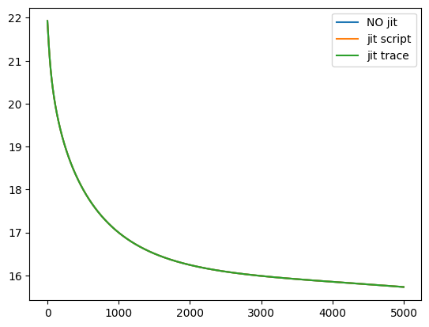

JIT with pytorch
FinistR : bootcamp R à Roscoff
JIT compilation with pytorch
We study Just In Time (JIT) compilation with pytorch. This tutorial is to be compared with JIT compilation in pytorch where much more explanations are given.
Set-up
References to pytorch JIT compilation, by order of difficulty:
- pytorch jit official documentation
- pytorch jit trace documentation
- TorchScript official tutorial
- pytorch jit intermediate guide
- pytorch jit intermediate / advanced guide
- pytorch jit advanced guide
Make necessary imports
import torch
import numpy as np
import math
import pyPLNmodels
import numpy as np
import matplotlib.pyplot as plt
from pyPLNmodels.models import PlnPCAcollection, Pln
from pyPLNmodels.oaks import load_oaksUsing a GPU.Note: We use pytorch GPU ! JIT compilation is particularly efficient on GPU. On this particular example, we were not able to see any speed up on CPU between jitted code and non-jitted code. We suppose it might be possible to get a CPU speed up on other case study, considering neural networks for example..
device = torch.device('cuda' if torch.cuda.is_available() else 'cpu')
print(device)
torch.set_default_dtype(torch.float32)
myfloat = np.float32cudaoaks = load_oaks()
Y = np.asarray(oaks['counts']).astype(myfloat)
Y = np.repeat(Y, 100, axis=0) # make data bigger to feel the speed up
O = np.log(oaks['offsets']).astype(myfloat)
O = np.repeat(O, 100, axis=0) # make data bigger to feel the speed up
X = np.ones([Y.shape[0],1]).astype(myfloat)
N_iter = 5000
lr = 1e-2Original non-jitted version
We reuse the code from PLN in pytorch.
def _log_stirling(integer: torch.Tensor) -> torch.Tensor:
integer_ = integer + (integer == 0) # Replace 0 with 1 since 0! = 1!
return torch.log(torch.sqrt(2 * np.pi * integer_)) + integer_ * torch.log(integer_ / math.exp(1))
class PLN:
Y : torch.Tensor
O : torch.Tensor
X : torch.Tensor
n : int
p : int
d : int
M : torch.Tensor
S : torch.Tensor
B : torch.Tensor
Sigma : torch.Tensor
Omega : torch.Tensor
device : torch.device
## Constructor
def __init__(self, Y: np.array, O: np.array, X: np.array, device:
torch.device) :
self.Y = torch.tensor(Y)
self.Y = self.Y.to(device)
self.O = torch.tensor(O)
self.O = self.O.to(device)
self.X = torch.tensor(X)
self.X = self.X.to(device)
self.n, self.p = Y.shape
self.d = X.shape[1]
## Variational parameters
self.M = torch.full(Y.shape, 0.0, requires_grad=True,
device=device)
self.S = torch.full(Y.shape, 1.0, requires_grad=True, device=device)
## Model parameters
self.B = torch.zeros(self.d, self.p, requires_grad=True, device=device)
self.Sigma = torch.eye(self.p, device=device)
self.Omega = torch.eye(self.p, device=device)
self.device = device
def get_Sigma(self) :
return 1/self.n * (self.M.T @ self.M + torch.diag(torch.sum(self.S**2, dim = 0)))
def get_ELBO(self):
S2 = torch.square(self.S)
XB = self.X @ self.B
A = torch.exp(self.O + self.M + XB + S2/2)
elbo = self.n/2 * torch.logdet(self.Omega)
elbo += torch.sum(- A + self.Y * (self.O + self.M + XB) + .5 * torch.log(S2))
elbo -= .5 * torch.trace(self.M.T @ self.M + torch.diag(torch.sum(S2, dim = 0)) @ self.Omega)
elbo += .5 * self.n * self.p - torch.sum(_log_stirling(self.Y))
return elbo
def fit(self, N_iter, lr, tol=1e-8) :
self.ELBO = np.zeros(N_iter, dtype=myfloat)
optimizer = torch.optim.Adam([self.B, self.M, self.S], lr=lr)
for i in range(N_iter):
## reinitialize gradients
optimizer.zero_grad()
## compute current ELBO
loss = -self.get_ELBO()
## backward propagation and optimization
loss.backward()
optimizer.step()
## update parameters with close form
self.Sigma = self.get_Sigma()
self.Omega = torch.inverse(self.Sigma)
objective = -loss.item()
self.ELBO[i] = objectiveLet’s create the PLN object:
%%time
myPLN = PLN(Y, O, X, device)CPU times: user 523 ms, sys: 67 ms, total: 590 ms
Wall time: 134 msand run the learning process:
%%time
myPLN.fit(N_iter, lr = lr, tol=1e-8)CPU times: user 34.5 s, sys: 193 ms, total: 34.7 s
Wall time: 35.3 sEager graph mode
There are two ways to create the computational graph: eager execution and graph execution. The default mode in pytorch is eager, this means the computational graph is created at each forward pass in the graph. On the other hand, the graph mode adds an additional compilation step which builds the graph only once and lets the computations be done at a lower level.
JIT (Just In Time) compilation is the process that builds an Intermediate Representation (IR) of the graph. This is the additional compilation step mentioned above.
Using graph mode, we gain:
- efficiency since the graph is precomputed and can be optimized to factorize redundant operations or delete useless operations.
- portability since this IR can be reused in another language.
However, we lose:
- flexibility since we are tied to fixed array sizes, we cannot easily use control flows, …
There are two ways in pytorch to JIT our code, hence, there are two ways to use require the graph mode. We study these two ways in the next sections.
JIT with torch.jit.script
By reading the above mentioned references, we get that we cannot jit the fit function. Some reasons are:
N_iteris variable at compilation time (shape might change depending on input).- the pytorch optimizer’s operations cannot be jitted.
torch.jit.scriptcannot handle control flow or loops.
class jitPLN(torch.jit.ScriptModule) :
Y : torch.Tensor
O : torch.Tensor
X : torch.Tensor
n : int
p : int
d : int
M : torch.Tensor
S : torch.Tensor
B : torch.Tensor
Sigma : torch.Tensor
Omega : torch.Tensor
device : torch.device
## Constructor
def __init__(self, Y: np.array, O: np.array, X: np.array, device: torch.device) :
super().__init__()
self.Y = torch.tensor(Y)
self.Y = self.Y.to(device)
self.O = torch.tensor(O)
self.O = self.O.to(device)
self.X = torch.tensor(X)
self.X = self.X.to(device)
self.n, self.p = Y.shape
self.d = X.shape[1]
## Variational parameters
self.M = torch.full(Y.shape, 0.0, requires_grad=True,
device=device)
self.S = torch.full(Y.shape, 1.0, requires_grad=True, device=device)
## Model parameters
self.B = torch.zeros(self.d, self.p, requires_grad=True, device=device)
self.Sigma = torch.eye(self.p, device=device)
self.Omega = torch.eye(self.p, device=device)
self.device = device
@torch.jit.script_method
def _log_stirling(self, integer):
integer_ = integer + (integer == 0) # Replace 0 with 1 since 0! = 1!
return torch.log(torch.sqrt(2 * np.pi * integer_)) + integer_ * torch.log(integer_ / math.exp(1))
@torch.jit.script_method
def get_Sigma(self) :
return 1/self.n * (self.M.T @ self.M + torch.diag(torch.sum(self.S**2, dim = 0)))
@torch.jit.script_method
def get_inv(self, S):
return torch.inverse(S)
@torch.jit.script_method
def get_ELBO(self):
S2 = torch.square(self.S)
XB = self.X @ self.B
A = torch.exp(self.O + self.M + XB + S2/2)
elbo = self.n/2 * torch.logdet(self.Omega)
elbo += torch.sum(- A + self.Y * (self.O + self.M + XB) + .5 * torch.log(S2))
elbo -= .5 * torch.trace(self.M.T @ self.M + torch.diag(torch.sum(S2, dim = 0)) @ self.Omega)
elbo += .5 * self.n * self.p - torch.sum(self._log_stirling(self.Y))
return elbo
def fit(pln, N_iter, lr, tol = 1e-8) :
ELBO = np.zeros(N_iter, dtype=myfloat)
optimizer = torch.optim.Adam([pln.B, pln.M, pln.S], lr = lr)
for i in range(N_iter):
## reinitialize gradients
optimizer.zero_grad()
## compute current ELBO
loss = - pln.get_ELBO()
## backward propagation and optimization
loss.backward()
optimizer.step()
## update parameters with close form
pln.Sigma = pln.get_Sigma()
pln.Omega = pln.get_inv(pln.Sigma)
objective = -loss.item()
ELBO[i] = objective
return ELBOLet’s create the jitted PLN object:
%%time
myjitPLN = jitPLN(Y, O, X, device)CPU times: user 194 ms, sys: 4.8 ms, total: 199 ms
Wall time: 19.4 msand run the learning process:
%%time
scriptELBO = fit(myjitPLN, N_iter, lr = lr, tol = 1e-8)/home/hugo/anaconda3/envs/finistR2023/lib/python3.9/site-packages/torch/autograd/__init__.py:200: UserWarning: operator() profile_node %760 : int[] = prim::profile_ivalue(%dims.24)
does not have profile information (Triggered internally at ../third_party/nvfuser/csrc/graph_fuser.cpp:104.)
Variable._execution_engine.run_backward( # Calls into the C++ engine to run the backward pass
CPU times: user 27.3 s, sys: 164 ms, total: 27.4 s
Wall time: 28.2 sJIT with torch.jit.trace
Here we use torch.jit.trace over each of the computational functions, the PLN class is just a container for the objects. The previous limitations from torch.jit.script are still present, notably, we cannot jit the main for loop.
class tracejitPLN:
Y : torch.Tensor
O : torch.Tensor
X : torch.Tensor
n : torch.Tensor
p : torch.Tensor
d : torch.Tensor
M : torch.Tensor
S : torch.Tensor
B : torch.Tensor
Sigma : torch.Tensor
Omega : torch.Tensor
device : torch.device
## Constructor
def __init__(self, Y: np.array, O: np.array, X: np.array, device: torch.device) :
self.Y = torch.tensor(Y)
self.Y = self.Y.to(device)
self.O = torch.tensor(O)
self.O = self.O.to(device)
self.X = torch.tensor(X)
self.X = self.X.to(device)
self.n, self.p = Y.shape
self.n = torch.tensor(self.n)
self.p = torch.tensor(self.p)
self.d = X.shape[1]
## Variational parameters
self.M = torch.full(Y.shape, 0.0, requires_grad=True,
device=device)
self.S = torch.full(Y.shape, 1.0, requires_grad=True, device=device)
## Model parameters
self.B = torch.zeros(self.d, self.p, requires_grad=True, device=device)
self.Sigma = torch.eye(self.p, device=device)
self.Omega = torch.eye(self.p, device=device)
self.device = deviceLet’s create the PLN object and the jitted functions:
%%time
mytracePLN = tracejitPLN(Y, O, X, device)
def _log_stirling(integer):
integer_ = integer + (integer == 0) # Replace 0 with 1 since 0! = 1!
return torch.log(torch.sqrt(2 * np.pi * integer_)) + integer_ * torch.log(integer_ / math.exp(1))
traced_logstirling = torch.jit.trace(_log_stirling, (mytracePLN.Y))
def get_ELBO(S, X, B, O, M, n, Omega, Y, p):
S2 = torch.square(S)
XB = X @ B
A = torch.exp(O + M + XB + S2/2)
elbo = n/2 * torch.logdet(Omega)
elbo += torch.sum(- A + Y * (O + M + XB) + .5 * torch.log(S2))
elbo -= .5 * torch.trace(M.T @ M + torch.diag(torch.sum(S2, dim = 0)) @ Omega)
elbo += .5 * n * p - torch.sum(traced_logstirling(Y))
return elbo
traced_getELBO = torch.jit.trace(get_ELBO, (mytracePLN.S, mytracePLN.X, mytracePLN.B, mytracePLN.O, mytracePLN.M,
mytracePLN.n, mytracePLN.Omega, mytracePLN.Y, mytracePLN.p))
def get_Sigma(n, M, S) :
return 1/n * (M.T @ M + torch.diag(torch.sum(S**2, dim = 0)))
traced_getSigma = torch.jit.trace(get_Sigma, (mytracePLN.n, mytracePLN.M, mytracePLN.S))
def get_inv(S):
return torch.inverse(S)
traced_getInv = torch.jit.trace(get_inv, get_Sigma(mytracePLN.n, mytracePLN.M, mytracePLN.S))CPU times: user 401 ms, sys: 4.63 ms, total: 406 ms
Wall time: 56 ms
/home/hugo/anaconda3/envs/finistR2023/lib/python3.9/site-packages/torch/jit/_trace.py:154: UserWarning: The .grad attribute of a Tensor that is not a leaf Tensor is being accessed. Its .grad attribute won't be populated during autograd.backward(). If you indeed want the .grad field to be populated for a non-leaf Tensor, use .retain_grad() on the non-leaf Tensor. If you access the non-leaf Tensor by mistake, make sure you access the leaf Tensor instead. See github.com/pytorch/pytorch/pull/30531 for more informations. (Triggered internally at aten/src/ATen/core/TensorBody.h:486.)
if a.grad is not None:def tracefit(pln, N_iter, lr, tol = 1e-8) :
ELBO = np.zeros(N_iter, dtype=myfloat)
optimizer = torch.optim.Adam([pln.B, pln.M, pln.S], lr = lr)
for i in range(N_iter):
## reinitialize gradients
optimizer.zero_grad()
## compute current ELBO
loss = -traced_getELBO(pln.S, pln.X, pln.B, pln.O, pln.M,
pln.n, pln.Omega, pln.Y, pln.p)
## backward propagation and optimization
loss.backward()
optimizer.step()
## update parameters with close form
pln.Sigma = traced_getSigma(pln.n, pln.M, pln.S)
pln.Omega = traced_getInv(pln.Sigma)
objective = -loss.item()
ELBO[i] = objective
return ELBOand run the learning process:
%%time
traceELBO = tracefit(mytracePLN, N_iter, lr = lr, tol = 1e-8)CPU times: user 25.6 s, sys: 171 ms, total: 25.8 s
Wall time: 26.5 sConclusion
We check that we get the same results with each method:
plt.plot(np.log(-myPLN.ELBO), label='NO jit')
plt.plot(np.log(-scriptELBO), label='jit script')
plt.plot(np.log(-traceELBO), label='jit trace')
plt.legend()
plt.show()
We see that jit script and jit trace reduce computation time by a few second over the non jitted code. Hence, jit compilation in pytorch can be interesting but induces strict limitations that the user must be aware of.
We should try to consider a more involved problem computationally speaking (bigger input data, computations involving neural networks, …)